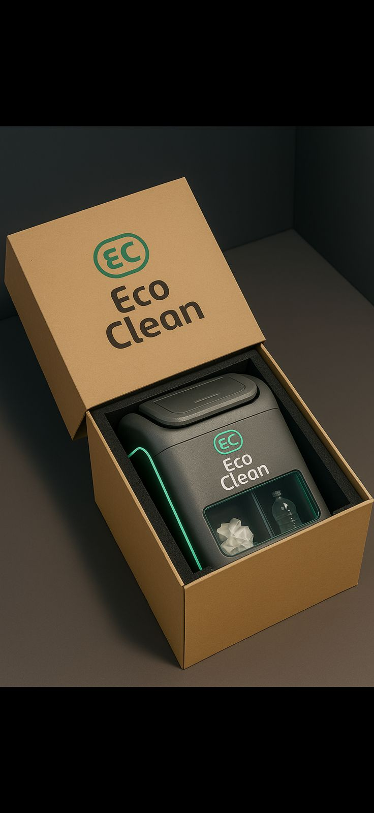
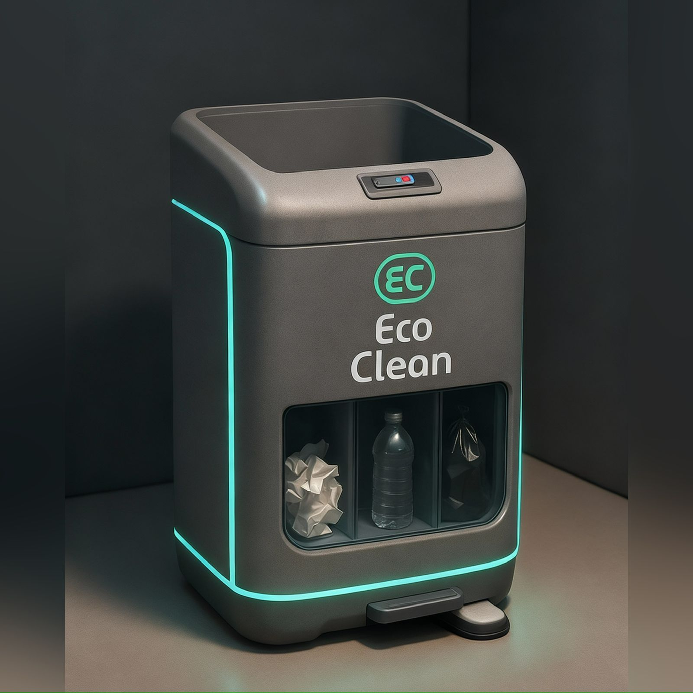
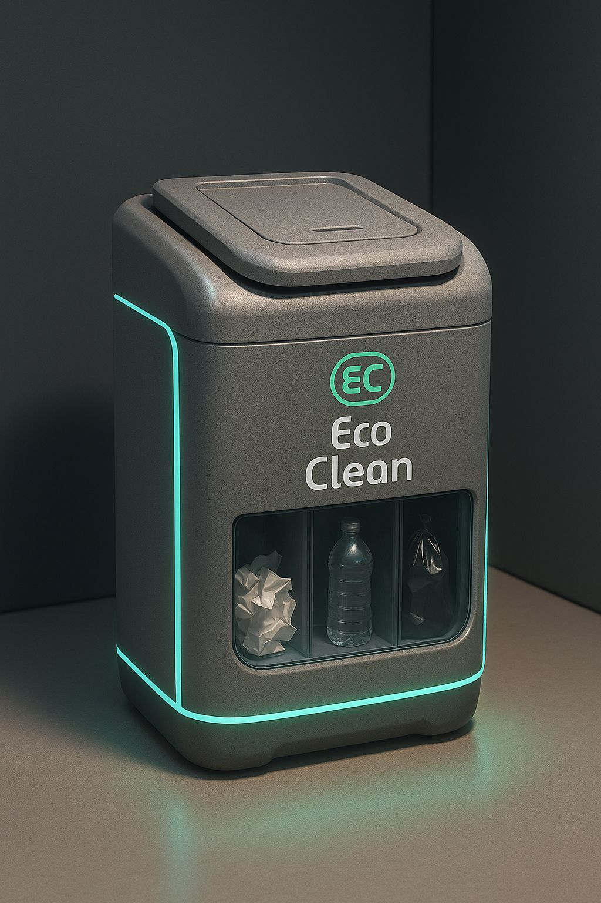

1. Introducción
El proyecto EcoClean surge como una solución innovadora para optimizar la gestión de
residuos en entornos universitarios y espacios académicos. Combinando tecnología
inteligente, sostenibilidad ambiental y diseño funcional, EcoClean representa un avance
significativo en la automatización de procesos de limpieza y reciclaje en campus
universitarios. Este reporte presenta una propuesta integral que incluye identidad visual,
especificaciones técnicas, componentes del prototipo, estrategia de marketing y plan de
ejecución.
2. Identidad Visual y Branding
2.1 Nombre del Producto
EcoClean — Nombre que combina "Eco" (ecología/sostenibilidad) con "Clean" (limpieza),
transmitiendo de inmediato la propuesta de valor del producto.
2.2 Eslogan
"La limpieza se organiza con inteligencia"
- Automatización y eficiencia: el sistema gestiona la apertura, monitoreo y alertas sin intervención humana.
- Inteligencia tecnológica integrada: sensores, servomotores y conectividad IoT optimizan el proceso de disposición de residuos.
- Compromiso con la organización y sostenibilidad: fomenta prácticas responsables y reduce el impacto ambiental.
- Acceso fácil y amigable: pensado para usuarios de todas las edades, con interacción sin contacto.
2.3 Identidad Cromática
- Color Primario: Verde Brillante – Representa la naturaleza, la sostenibilidad y el enfoque ecológico de EcoClean.
- Color Secundario: Azul Cobalto – Simboliza la tecnología, la innovación y la confiabilidad del sistema inteligente.
- Colores de Contraste: Blanco y Gris Claro – Refuerzan limpieza, modernidad y claridad visual en la identidad del producto.
2.4 Tipografía
- Encabezados: Montserrat Bold — Moderna, legible e impactante.
- Cuerpo de Texto: Open Sans Regular — Clara, accesible y cómoda para lectura prolongada.
- Tipografía Secundaria: Roboto Light — Complementaria y elegante; usada para detalles, subtítulos o elementos informativos adicionales.
2.5 Público Objetivo
Estudiantes universitarios, personal administrativo, instituciones educativas, centros comerciales y
espacios públicos interesados en sostenibilidad.
3. Descripción del Producto
3.1 ¿Qué es EcoClean?
EcoClean es un bote de basura automatizado e inteligente, equipado con sensores de proximidad,
sistemas de compactación y conectividad digital. Diseñado para espacios universitarios, permite:
- Apertura automática sin contacto físico
- Detección inteligente del nivel de llenado
- Alertas digitales al sistema de gestión
- Separación facilitada de residuos
- Reducción significativa de volumen mediante compactación
- Integración con aplicaciones móviles
3.2 Características Principales
- Sensor Ultrasónico HC-SR04: Detecta proximidad del usuario (20–30 cm)
- Tapa Automática con Servomotor: Abre y cierra automáticamente en 3–5 segundos
- Sistema de Detección de Nivel: Sensor infrarrojo que indica llenado
- Compactación Automática: Reduce residuos hasta 40% (opcional en versión avanzada)
- Conectividad IoT: Notificaciones en tiempo real vía app o web
- Capacidad: 12–15 litros (ideal para espacios universitarios)
- Autonomía: 2–3 meses con baterías recargables tipo AA o USB
- Materiales: Plástico resistente ABS, duradero y ecológico
3.3 Beneficios Para Usuarios
- Mayor higiene y reducción de olores.
- Eficiencia y reducción de costos de limpieza.
- Accesible y fácil de usar.
- Sostenibilidad y promoción del reciclaje.
4. Diseño Técnico y Componentes
4.1 Arquitectura General
ECOCLEAN SMART BIN
- Cuerpo: Cilindro plástico ABS
- Altura: 45 cm
- Diámetro: 25 cm
- Capacidad: 12–15 litros
- Peso: 2.5 kg (vacío)

4.2 Componentes Electrónicos Requeridos
| Componente |
Modelo / Especificación |
Función |
| Placa Base |
Arduino UNO o ESP32 |
Control y procesamiento de datos |
| Sensor Ultrasónico |
HC-SR04 |
Detección de proximidad |
| Servomotor |
SG90 o MG996R |
Apertura/cierre de tapa |
| Sensor de Nivel |
IR Infrarrojo |
Detección de llenado |
| Fuente de Energía |
Batería recargable 9V o 4 AA |
Alimentación del sistema |
| Módulo WiFi |
ESP8266 o WiFi integrado |
Conectividad IoT (opcional) |
| LEDs |
Indicadores RGB 5mm |
Estado del sistema |
| Cables |
Puente / Jumpers variados |
Conexionado |
| Buzzer |
5V-12V |
Alertas sonoras (opcional) |
4.3 Esquema de Funcionamiento
- Detección: El sensor ultrasónico detecta proximidad (0–30 cm).
- Activación: Arduino procesa la señal recibida.
- Apertura: El servomotor abre la tapa automáticamente (2–3 segundos).
- Tiempo de Espera: El sistema espera 5 segundos antes de continuar.
- Cierre: El servomotor cierra la tapa automáticamente.
- Monitoreo: El sensor de nivel verifica la capacidad del contenedor.
- Alerta: Si el contenedor está lleno, se envía una notificación al sistema central.
4.4 Especificaciones de Energía
- Voltaje: 5V–12V
- Consumo: 500mA
- Modo reposo: 50mA
- Autonomía: 60–90 días

5. Estrategia de Precios
5.1 Análisis de Costos
- Materiales y Componentes: 810–1,080 USD
- Ensamble y Mano de Obra: 360–540 USD
- Diseño y Desarrollo: 270 USD
- Costo Total Unitario: 1,440–1,890 USD
5.2 Precios
| Versión |
Precio |
Características |
| Básico |
$149.99 |
Sensor + tapa automática |
| Pro |
$249.99 |
Sensor + nivel + WiFi |
| Premium |
$349.99 |
Compactación + App |
5.3 Justificación de Precios
- Innovación y tecnología integrada
- Beneficios operacionales (reducción de costos de limpieza)
- Valor ambiental (sostenibilidad)
- Durabilidad y garantía (2 años)
- Comparación competitiva favorable
6. Canales de Distribución
6.1 Distribución Física
- Tiendas de electrónica y gadgets
- Distribuidores de equipos ecológicos
- Directamente en campus universitarios
- Ferias tecnológicas y eventos estudiantiles
6.2 Distribución digital
- Plataforma de comercio electrónico (Amazon, MercadoLibre)
- Sitio web corporativo con venta directa
- Redes sociales (Instagram, TikTok, Facebook)
- Plataformas B2B para instituciones
6.3 Distribución digital
- Universidades y centros educativos
- Empresas de gestión de residuos
- Proveedores de sistemas inteligentes
- Organizaciones ambientales
7. Estrategia de Promoción
7.1 Marketing Digital
- Campaña en redes sociales con contenido educativo sobre sostenibilidad
- Videos de demostración del producto (funcionamiento y beneficios)
- Influencers universitarios y ambientalistas
- Publicidad programada en plataformas dirigidas a jóvenes
7.2 Marketing de Contenidos
- Blog sobre gestión de residuos y tecnología sostenible
- Infografías sobre impacto ambiental del reciclaje
- Testimonios de usuarios universitarios
- Casos de éxito de implementación
7.3 Estrategias de Promoción Inicial
- Descuentos por volumen: 15-20% para instituciones educativas
- Programa piloto: Primeras 50 unidades a precio especial
- Garantía extendida: 2 años incluidos
- Capacitación gratuita: Para usuarios y administradores
7.4 Eventos y Activaciones
- Demostraciones en ferias tecnológicas y ambientales
- Workshops en universidades sobre gestión sostenible
- Participación en eventos de emprendimiento estudiantil
- Sponsoreo de iniciativas ecológicas en campus
8. Plan de Ejecución
8.1 Fases del Proyecto
Fase 1: Prototipado (Semanas 1-4)
- Ensamble de componentes electrónicos
- Pruebas de sensores y funcionamiento
- Ajustes de diseño estructural
Fase 2: Pruebas y Validación (Semanas 5-8)
- Pruebas de funcionamiento en campus piloto
- Recopilación de feedback de usuarios
- Mejoras iterativas
Fase 3: Producción (Semanas 9-12)
- Fabricación de primeras unidades
- Control de calidad
- Preparación para lanzamiento
Fase 4: Lanzamiento (Semana 13+)
- Campaña de marketing integral
- Distribución inicial en canales piloto
- Monitoreo de ventas y satisfacción
8.2 Indicadores de Éxito
- Número de unidades vendidas
- Satisfacción del cliente (NPS >70)
- Reducción de residuos en campus piloto
- Tasa de retención de usuarios
- Engagement en redes sociales

9. Conclusión
EcoClean representa una oportunidad significativa para innovar en la gestión de residuos
universitarios. Combinando tecnología accesible, diseño sostenible y valor propositivo
claro, el producto está posicionado para captar un mercado en crecimiento de
instituciones y espacios comprometidos con sostenibilidad ambiental.
El eslogan "La limpieza se organiza con inteligencia" encapsula perfectamente la propuesta
de valor: automatización, eficiencia y compromiso ambiental en un solo producto.
Con una estrategia de marketing bien ejecutada y un enfoque en la experiencia
universitaria, EcoClean tiene potencial para convertirse en un referente en soluciones
ecointeligentes para el sector educativo.